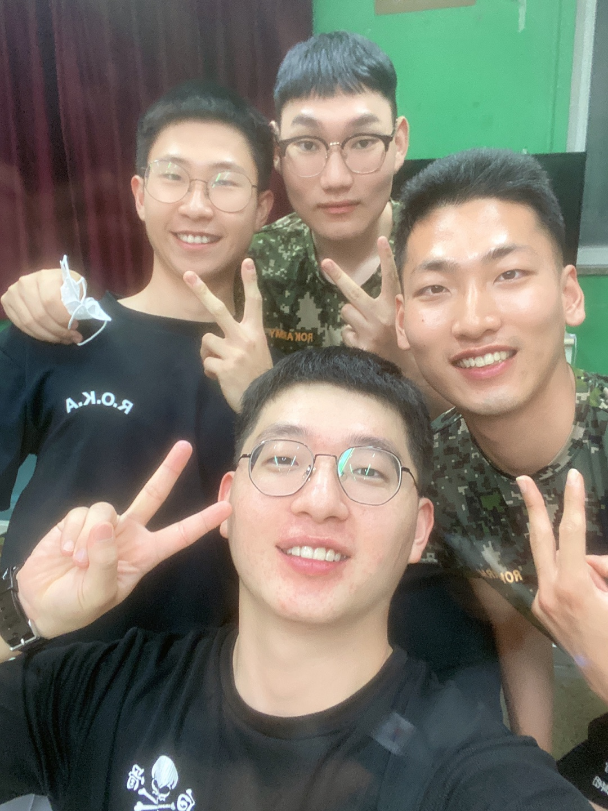
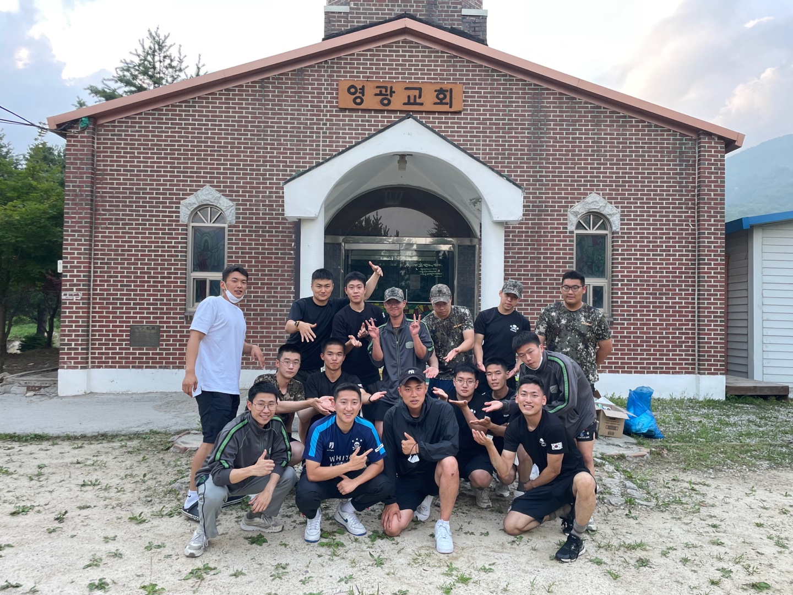

병장 1호봉 처음 딱 됐을 때는 와 이제 내가 병장이야? 이러면서 지금까지의 내 군생활을 되돌아본다. 입영장정 때부터 신교대 부터 자대와서 지금까지 일들을 생각해보면 되게 꿈같고 기분이 묘하다. 되돌아보니 시간이 새삼 빠르게 느껴진다 생각한다. 하지만 아직도 군생활 90퍼 채 하지 못했다는 게 말이 안된다. 이제 집 갈때가 된 것 같은데 아직도 여기에 2개월 이상이나 있어야 한다는 게 진짜 말이 안 된다. 버그 인 것 같다. 그렇지만 마음을 다잡고 열심히 해보려하지만, 요즘은 기상 방송도 잘 듣지못하고 , 점호를 나가는 게 너무 귀찮다. 병장을 달고 며칠 뒤에 난 계속 휴가를 나갔다 지금 이 글을 쓰고 있는 시점도 말출 나온 시점에서 글을 작성 하고 있는 것이다. 군생활 참 재밌었던 것 같다. 전역하면 다신 못 볼 중대원들과, 어디서 경험 못 해 볼 훈련들, 철야 훈련과 행군으로 지친 어깨 떨구고 있을 때 문득 밤 하늘을 보니 수없이 펼쳐진 별들,생활관에서 몰래 라면 먹었을때, 그때만의 감성이 문득문득 기억 날 것 같다. 하지만 재입대는 절대 안한다.
같이 많은 시간 보냈던 5생활관 친구들, 1소대 간부님들, 선임분들께 도움도 많이 받고, 배운점이 많았던 것같다. 곧 있으면 전역하는 내 동기들과, 이미 전역한 소대장님 고마웠고 잊지 못할 추억이 생겨서 재밌었다. 사회 나가서도 화이팅하자!! 
